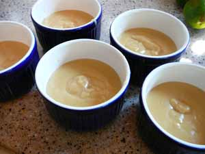

Mom makes pudding
There have been some very upscale pudding posts in the food blogosphere lately and I have read them with a great deal of interest as I have long been a fan of puddings of all types. I never ate bread pudding until I was an adult and made it for myself, although I’m surprised my mother didn’t make it, since she is one to use up stale bread in creative ways and I grew up hearing her say “Waste not, want not!” I guess we ate most of our bread or it got made into French toast if it was too stale to use for sandwiches.
I had forgotten about old-fashioned cornstarch pudding until the past few months, when I was cooking for my young friend with the broken jaw. It’s one of the first things girls used to be taught to cook in home economics class back when it was a mandatory part of the curriculum, even for us college prep kids. At home my mother actually used to use the pudding mix that you added milk to and cooked in a saucepan, so I did need to learn how to make real pudding from scratch. There are a couple of fundamental cooking principles involved – cornstarch must be added to cold liquid, and egg must be tempered (warmed up) before being added to a hot mixture – that all beginning cooks should know.
Later on when I was working at the Watergate and enrolled in classes at the local community college as part of the apprentice chef program I was involved in, we took a taste test of chocolate pudding in class one day, tasting the old-fashioned kind, the boxed cooked kind, and the instant variety that somehow gets thick when you stir the mix into the milk. As expected, everyone preferred the type they had grown up with and the only one who really like the old-fashioned kind best was the teacher. The youngest kids in the class preferred the instant, and those of us in my age group all like the boxed cooked type. Of course, I wouldn’t dream of eating that kind now.
Yes, cornstarch pudding is primarily nursery food, but my family loves it, and it makes a serviceable filling for cream puffs of all shapes and sizes. You can also spread it out in a baked pie shell, top with whipped cream, and have an easy cream pie. Another thing you can do with the vanilla pudding is use it to fill those pre-made chocolate shells that look sort of like cupcake liners, then top with some fresh raspberries; looks elegant yet is so easy. Last night I made butterscotch pudding, but I think the chocolate is my favorite.
Vanilla Pudding from the Better Homes and Gardens Cookbook, 1969 edition
serves 4 or 5

- 3/4 cup sugar
- 2 tablespoons cornstarch
- 1/4 teaspoon salt
- 2 cups milk
- 2 slightly beaten egg yolks or 1 well-beaten egg
- 2 tablespoons butter
- 1 teaspoon vanilla
In saucepan, blend sugar, cornstarch, and salt; add milk. Cook and stir over medium heat till thickened and bubbly. Cook and stir 2 minutes more. Remove from heat.
Stir small amount of hot mixture into yolks (or beaten egg); return to hot mixture; cook and stir 2 minutes more. Remove from heat; add butter and vanilla. Pour into serving dishes; chill.
Chocolate Pudding: Follow directions for vanilla pudding, increasing sugar to 1 cup. Add two 1-ounce squares unsweetened chocolate along with the milk.
Butterscotch Pudding: Follow directions for vanilla pudding, substituting brown sugar for granulated sugar. Increase butter to 3 tablespoons.
Note: If you are using this for filling cream puffs, place a sheet of wax paper or plastic wrap directly on the surface while chilling so it doesn’t develop a “skin”.
Comments
Sounds like we’re from the same era, more or less. I haven’t made a pudding for eons, and I didn’t remember using cornstarch at all, though I’m not doubting you. In any case, I’ll take the butterscotch, please, and I think its every bit as good warm as chilled.
My mom used to make pudding like this all the time. I think I’ve only done it a few times in the last ten years, and every time my husband gets really happy, but then I seem to forget about it. I think I like butterscotch the best, but he likes chocolate. It might be time to make this again soon, thanks for reminding me about it.
I guess back in the day girls and women used to be able to make pudding like this without looking at a recipe and with one hand tied behind their backs; I was nervously whisking away, setting my timer for increments of two minutes (our forebears really would have laughed at that one) and whipping my head back and forth between the saucepan and the cookbook.
Mary, it’s always a good thing to end a meal on a happy note, particularly if that meal happens to contain smoked paprika! :)
drool…
I think Fred is ready to start experimenting with real homemade pudding and his tea infusions. I’m passing this on to him!
Hi, I’m surprised you don’t remember the bread pudding! I made that quite a few times and it was always one of Dad
s favorites. I always used my Mom’s recipe, though I tried a Martha Stewart Choc. Bread Pudding a couple of years ago and it was a really big hit with the crowd I served it to.
Anne, Fred’s tea puddings sound quite intriguing; you’ll have to have him post on them.
Hi, Mom! You’re right, I have no recollection of you making bread pudding; I wonder why that is? Did us kids like it? Maybe that’s the reason. Rice pudding, yes, bread pudding, no memory at all.
How about junket, and tapioca pudding? remember them? I have made some lovely chocolate pies with that great dutch process cocoa recently. Glad you introduced me to that. Also, how about banana custard? That was always one of my favorites, of course you don’t eat bananas. :-{ The kids do look great! No more hoop skirts on prom gowns. guess they will be back one day. 3 guys? Who got to share the 3rd guy??
I remember Dad used to say, “Junket? Junk it!” and that my heart wasn’t gladdened by tapioca pudding, and that it was probably the rotten bananas in the banana custard that accounts for my lifelong hatred of bananas! You also made an intriguing dish you called something like “Spanish Cream”; do you remember that?
Yes, I,too, noticed that the girls seem to be wearing short skirts to the proms now. As far as the extra guy goes, apparently they don’t all go with dates anymore, either, which seems strange to me, and Ben went stag.
Can you please send me facts about banbana pudding.
p.s. THANKS
can anyone tell me where to get the premade chocolate shells that look like liners that this post it talking about?
or if it is possible to make them?
thank you!
cortneyluv324@hotmail.com
Shenique-I don’t like bananas so never make banana pudding, but I think my mother just used to slice over ripe bananas into the bottom of a serving bowl and pour vanilla pudding over them, then chill. As the pudding sits the banana flavor infuses the entire thing. I know when I made a banana cream pie for a friend I did it that way, sliced bananas into the bottom crust, then covered with vanilla custard.
Cortney-I haven’t used the chocolate shells in awhile but one year I found them at Sam’s Club but we also used to sell them at the gourmet cooking store I worked at. You might find them at high-end cooking stores or upscale grocery stores, or specialty chocolate shops. They may also be a more seasonal item, only appearing around Christmas or Valentine’s Day. You could try looking for them online, I’d call them “chocolate dessert shells.”
Add a comment